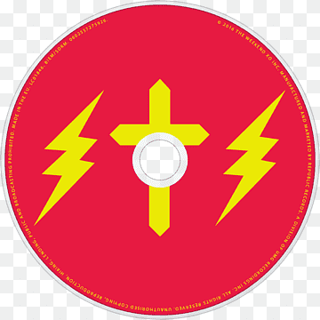

Coleção musical
Minha lista de álbuns
Uma página demonstrativa com a arte que estava disponível na pasta.
-

Álbum de exemplo
Starboy
The Weeknd 2016
Faixas
- StarboyOuvir no YouTube
- Party MonsterOuvir no YouTube
- False AlarmOuvir no YouTube
- ReminderOuvir no YouTube
- Rockin’Ouvir no YouTube
- SecretsOuvir no YouTube
- True ColorsOuvir no YouTube
- Stargirl InterludeOuvir no YouTube
- SidewalksOuvir no YouTube
- Six Feet UnderOuvir no YouTube
- Love to LayOuvir no YouTube
- A Lonely NightOuvir no YouTube
- AttentionOuvir no YouTube
- Ordinary LifeOuvir no YouTube
- Nothing Without YouOuvir no YouTube
- All I KnowOuvir no YouTube
- Die for YouOuvir no YouTube
- I Feel It ComingOuvir no YouTube
Escolha uma faixa para encontrar e ouvir no YouTube.